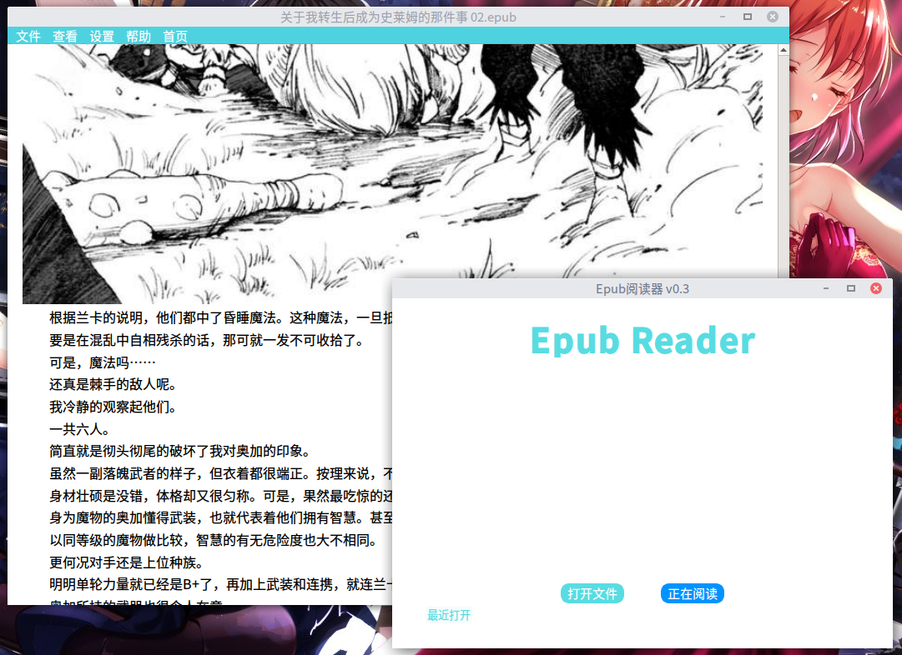

epub阅读器 v0.3 17.12.17_11:11:41这是个很久之前写的epub电子书阅读器 功能十分单调，代码也很渣，比现在还要渣的代码自己想想都可怕。现在想来，写这个软件纯属是无聊所致，厉害的不会写，太没用的不想写，不写更加不行。恰好那时有看epub电子书的习惯，所以就写了这个电脑打开epub的软件。但是自己压根没真正用过，都是手机看的，顶多是电脑下载epub之后，用它来预览一下内容而已。

项目地址：项目名称之所以是test，是因为当时想做新的功能，就复制了项目叫做test，后来写完就懒得改回去了。 https://github.com/noahsai/epubreader
|